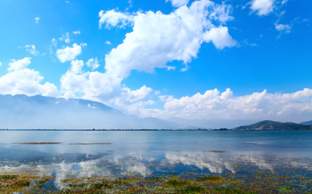
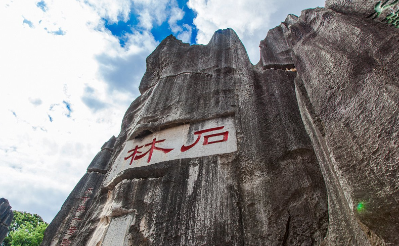
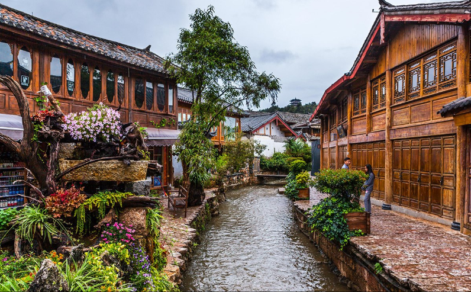
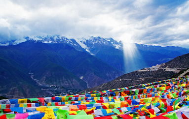
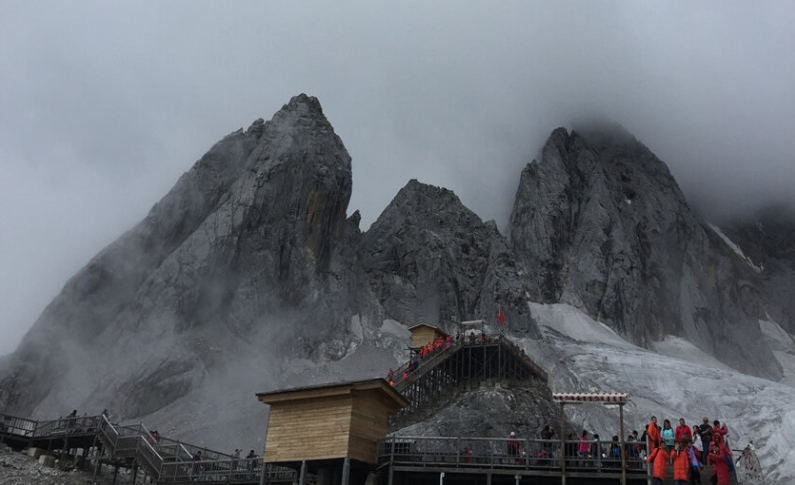
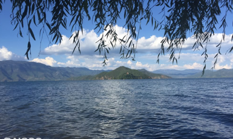

云南风景
-

苍山洱海
苍山洱海位于云南省大理州大理市，海拔2090米，地处低纬高原，四季温差不大，干湿季分明，以低纬高原季风气候为主，面积约1096平方公里，属亚热带高山气候，是国家AAAA旅游景区，免费开放。
-

云南石林
石林县2022年“五一”假日旅游市场运行 情况 2022-05-11 奋进新征程 阅读再出发:石林县举办2022年“世界读书日”暨“世... 2022-04-29 云南石林:春深绿浓画中游 2022-04-19 石林真奇妙:凝固的...
-

丽江古城
丽江古城位于云南省丽江市古城区，又名大研镇，坐落在丽江坝中部，始建于宋末元初（公元13世纪后期），地处云贵高原，面积为7.279平方公里。丽江古城内的街道依山傍水修建，以红色角砾岩铺就，有四方街...
-

梅里雪山
梅里雪山，是位于西藏察隅县东部与云南迪庆藏族自治州德钦县境云岭乡西部的一座南北走向的庞大的雪山群，全长有150公里。梅里雪山在藏区称卡瓦格博雪山，“梅里”一词为德钦藏语mainri汉译，意思是药山...
-

玉龙雪山
玉龙雪山景区面积为415平方公里，由十三座雪峰组成，由北向南呈纵向排列，延绵近50公里，主峰扇子陡海拔5596米，终年积雪，发育有亚欧大陆距离赤道最近的温带海洋性冰川。玉龙雪山是纳西人民心中的神山...
-

泸沽湖
泸沽湖古称鲁窟海子，又名左所海，俗称亮海。泸沽湖旅游景区四周崇山峻岭，一年有三个月以上的积雪期，森林资源丰富，山清水秀，空气清新，景色迷人，被当地摩梭人奉为“母亲湖”。湖泊略呈北西一东南...